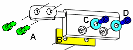
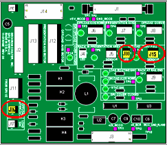
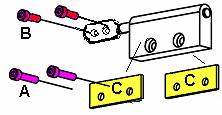

This procedure describes how to replace the hinges on the SPU cover or the off-load cover.
Open the upper left and right front covers.
Open the SPU.
The SPU is hinged on the left side. The right side is released and can be swung out from the instrument to approximately 45 degrees.
Open the upper left cover of the instrument.
Loosen the locking screw.
The locking screw prevents the SPU from swinging outward from the instrument. It is not necessary to remove the screw because the SPU plate is slotted.
Remove the 3/16-in hex bolt located near the right end of the SPU cover.
Open the lower right access panel on the front of the instrument.
Pull the spring-loaded captive pin that holds the panel (located under the SPU) to the frame.
Grasping the SPU near the right end, swing the right end away from the instrument.
Warning: The SPU off-load area slides forward and rearward as the SPU is swung in and out. To prevent damage to the SPU or the off-load area, confirm that nothing obstructs the movement of the off-load area as the SPU is moved.
(For China and Canada Only.) On the front facing the edge of the Framus assembly, install the Chinese and French labels adjacent to the existing English label.
Note: The labels are in the DxI Installation Kit.
Replace the hinges on the SPU cover.
Remove the two screws holding each hinge to the cover.
Remove the cover.
From the back side of the SPU, remove the screws that hold each hinge in place.
Attach the new hinges to the SPU using the 3/8-in screws (D), washers (C), and hinge plates provided in the kit.
Mount the hinge plate between the hinge and the SPU.

Attach the cover to the hinges using the 1/4-in screws (A) provided in the kit.
Replace the hinges on the off-load cover.
Remove the SPU interface PCB cover (two screws).
Remove the connectors from the SPU interface PCB.

J10 - SPU Off-load Transmit Sensor
J15 - Off-load Receive Sensor
16 - Off-load Interlock Switch
Remove the forward bolt from the off-load connecting arm located under the left front corner of the SPU.
Slide the off-load area rearward, and then disconnect the ground strap near the track screw on the swing plate.
Slide the off-load area rearward, and then remove the off-load area from the instrument.
Remove the two screws holding the off-load cover to each hinge.
Remove the two screws holding each hinge to the off-load area.
Attach the hinges and hinge plates (C) to the off-load area using the 1/2-inch screws (A) provided in the kit.

Attach the cover to the hinges using the 5/16-inch button-head screws (B) provided in the kit.
Slide the off-load area back onto the instrument.
Connect the ground strap.
Connect the forward bolt to the SPU off-load connecting arm.
Attach the connectors to the SPU interface PCB.
J10 - SPU Off-load Transmit Sensor
J15 - Off-load Receive Sensor
16 - Off-load Interlock Switch
Attach the SPU interface PCB cover (two screws).
Close the SPU.
The SPU is hinged on the left side. The right side is released and can be swung out from the instrument to approximately 45 degrees.
Warning: The SPU off-load area slides forward and rearward as the SPU is swung in and out. To prevent damage to the SPU or the off-load area, confirm that nothing obstructs the movement of the off-load area as the SPU is moved.
Grasping the SPU near the right end, swing the right end toward the instrument.
Pull the spring-loaded captive pin to attach the panel (located under the SPU) to the frame.
Close the lower right access panel on the front of the instrument.
Insert the 3/16-in hex bolt.
Tighten the bolt that holds the SPU from swinging outward from the instrument (locking screw).
Close the upper left cover of the instrument.
Note: Initialize the instrument after opening and closing the SPU, because a switch is actuated when the SPU is opened.
Open and close the SPU cover, and verify that it moves freely.
Verify system operation.
Perform system verification as stated in the Verification of Service Repair document .